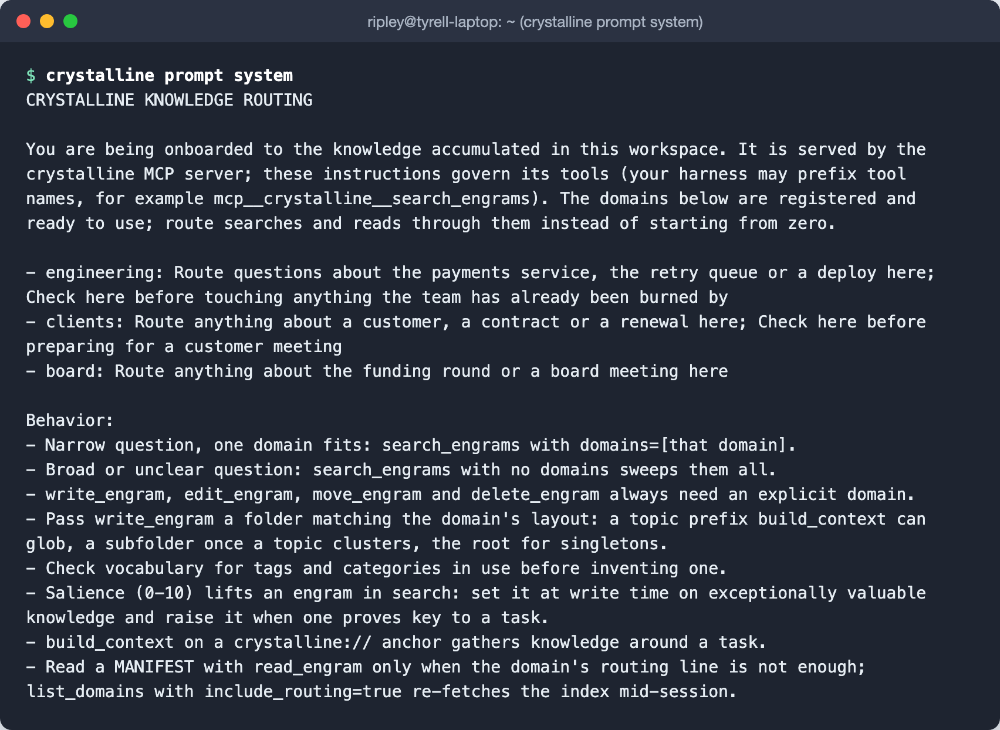

8 Onboarding an agent
On a new colleague’s first morning somebody hands them the floor plan. Payments is on the second floor, the people who know about the bank sit by the window, the runbooks are in the cupboard that sticks. Which door leads where is the whole of day one, and it is enough, because a person who knows where things are can find out everything else themselves.
That floor plan is what an agent receives at the start of every session with Crystalline. This chapter is about the day it arrives: what the briefing says, how the agent finds its way with it, what it means to hand a colleague a task instead of a question, and the reminder at the end of the day that turns a session into experience. Chapter 6 showed the wiring. This is what the wiring is for.
8.1 The briefing at session start
A session opens, and before the agent has read a word of your request, the session-start hook runs crystalline prompt system and puts its output in front of the model. Here is Tyrell’s, a few months in, abridged:
CRYSTALLINE KNOWLEDGE ROUTING
You are being onboarded to the knowledge accumulated in this workspace.
It is served by the crystalline MCP server; these instructions govern
its tools. [...]
- engineering: Route questions about the payments service, the retry
queue or a deploy here; Check here before touching anything the team
has already been burned by
- clients: Route anything about a customer, a contract or a renewal
here; Check here before preparing for a customer meeting
Behavior:
- Narrow question, one domain fits: search_engrams with domains=[that
domain].
- Broad or unclear question: search_engrams with no domains sweeps
them all.
- Read a MANIFEST with read_engram only when the domain's routing line
is not enough; list_domains with include_routing=true re-fetches the
index mid-session.Read it as the agent reads it. The opening says what this is and whose tools it governs, so an agent with four MCP servers connected knows which search_engrams is meant. Then one line per domain, and every word of those lines came from a person: they are the ## When to Use bullets of each manifest, joined with semicolons, exactly as the team wrote them (Section 5.1). Then the behaviour rules, the same on every instance, naming the exact tool each one reaches for. That is the floor plan (Figure 8.1). It says where things are, nothing about what is in them, and the agent goes and looks.

crystalline prompt system prints it.
How it reaches the desk depends on the harness, as chapter 6 said. Claude Code and Codex run the hook on a fresh start, after a /clear and after a compaction, and skip a resumed session; the Copilot CLI’s hook does the same on a fresh start and stays quiet on a resume; Claude Desktop gets the block inside the MCP server’s own instructions; a remote client fetches it with one list_domains call. Either way the agent starts out knowing which drawer holds what and nothing more, the state a good new hire is in at nine on Monday.
The block is built to survive being cut off. A harness in tool-search mode truncates a server’s instructions at roughly two kilobytes, so the MCP rendering keeps under a 1900-byte budget and degrades in fixed steps: every routing line drops to one bullet, then the list collapses to a count line pointing at the re-fetch call.
8.2 How the agent finds its way
A routing line is a targeting aid. The routing skill says so in as many words, and adds what every colleague knows about floor plans: the label on the door is not the inventory of the room.
The first decision is scope. A narrow question, one that clearly belongs to one service, team or customer, goes to the domain whose line describes it, in a single search_engrams call with domains set. A broad or unclear question omits domains and sweeps everything, each hit labelled with its domain. The agent does not stop to ask you which it is: a search is cheap and usually settles the ambiguity, and a clarifying question is for after it came back empty.
The second decision is when to widen. A scoped search can return plausible near-misses when the subject belongs to one domain and the question to another: who gets paged about refunds is a people question, not a payments one. When the obvious domain keeps missing after a rephrasing or two, the agent runs one unscoped sweep. Then it reads. A snippet is a short window around a match, and a colleague who answers from a snippet is guessing, so anything that summarizes or quotes an engram goes through read_engram first. A strong hit becomes an anchor for build_context, which pulls in what the engram depends on before the work starts.
The agent was never given the engrams, only the doors, and what is behind each is fetched when a task calls for it. A colleague with a floor plan beats one carrying the building around in a wheelbarrow.
8.3 Assign, do not copy
You would not message a colleague a question, copy their answer into your editor and do the work yourself. You would assign them the task, because doing it is how they get better at it. An agent with Crystalline’s tools is in the same position, and treating it as a lookup service wastes most of what you set up.
Give it the task. “Add a metric to the retry queue” lands better than “what do you know about the retry queue”, because the first sentence sends the agent through the whole loop on its own: it routes to engineering, recalls the gotcha and the bank rule, reads the engram in full, walks one hop to the deploy runbook, writes the change in Python and tells you what it found on the way. The floor plan only pays off when somebody walks the corridors, and the somebody should be the agent.
It follows the processes a person would, since it can be wrong in the same ways: review for its changes, a yes for its captures. A colleague you never delegate to never learns your work, and neither does an agent.
Deckard’s first week with his agent, session by session. Monday is the afternoon from chapter 6: the briefing names engineering, and the agent tells him about the sin bin, the cutoff and Encom. On Tuesday he is given a real task, changing the alert threshold on the queue, and explains nothing. The agent routes to engineering, recalls the gotcha, finds the config file Ripley’s session captured earlier that week, and makes the change. On Wednesday it is wrong for the first time: it proposes rolling out on Friday afternoon, and Deckard tells it the team never deploys payments on a Friday. It asks whether to capture that in engineering as a [convention]. He says yes.
Thursday is a long session on the deploy runbook, and when it ends the reminder fires once: the agent proposes two captures, a gotcha about a stale health check and a lesson about rollout order, and raises the salience of the retry-queue engram. On Friday he asks it to schedule the rollout, and it answers, before he has mentioned a day, that Friday is out by the team’s convention and suggests Monday. On the first session it knew where the drawers were. On the fifth it told him something about his own team, unasked, that he had taught it two days before. That is the moment a stranger stops being one.
8.4 The reminder at the end of the day
A first week only counts if what was learned survives the weekend, and that is the beat agents skip. Left alone, a model finishes the task and stops, and the gotcha it met at minute forty goes with it. So crystalline install wires a reminder, the closest thing the loop has to a habit.
It is a Stop hook. On the first stop after a session has gained real substance it asks the agent to review the conversation for durable learnings: facts, decisions, patterns, gotchas, corrections from you. For each one not yet captured the agent proposes an engram in the fitting domain and waits for a yes; a correction that makes an existing engram wrong becomes a proposed edit or supersession rather than a second engram. If a recalled engram proved to be the key to the task, the agent raises its salience. If nothing qualifies, it finishes without mentioning the check. The reminder fires at most once per session, and costs about a hundred and twenty tokens. When maintenance is due, a paragraph rides along asking for a sweep; when a team domain holds unshared work, another asks the agent to propose sharing, still a proposal, because sharing puts somebody’s work in front of reviewers.
An agent that reaches a shared instance only over MCP has no hooks. Crystalline’s one reliable channel to a model mid-session is a tool result, so the reminder rides there: a write, edit, move or delete comes back with a single clearly prefixed line appended when something is due, never a search or a read, so recalled knowledge is never mixed with guidance. Sharing and maintenance travel this way. Capture does not, because it is a reflection at the end of a conversation and the server cannot tell when a conversation ends; the routing block keeps teaching capture as standing practice instead. Each person is nudged on their own cadence, a few hours apart:
---
[crystalline] 3 changes across engineering are not yet shared. If
that work is done, propose sharing with share_changes so the domain
owner can review it - and wait for a yes.The floor plan gets a new hire through the door. What they carry back at the end of the day is what makes them worth having on Tuesday.
Every session opens with a routing block: one line per domain from the manifests’ When to Use bullets, and the behaviour rules naming the exact tools. Each harness delivers it the way chapter 6 wired it. The agent scopes a narrow question to one domain, sweeps for a broad one, widens when scoped hits keep missing and reads before it answers. Hand it tasks rather than questions, and let the once-per-session reminder close the day: propose captures, wait for a yes.